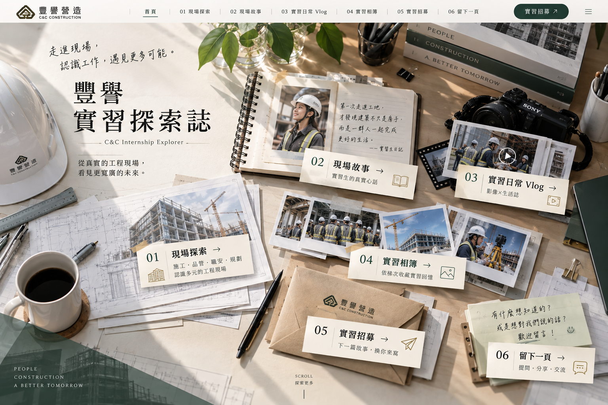

點擊桌上的物件，翻開故事 ↗
C&C INTERNSHIP EXPLORER
豐譽
實習探索誌
翻開日記，探索那些課本以外的現場故事。
CHAPTER 01 · BLUEPRINT
同一座工地，
不只一種視角。
施工、品管、職安、規劃。四種專業，四種觀察現場的方法。選一個區域，展開你的工程藍圖。
01
＊各組工作內容為體驗方向示意，實際任務會依工程階段、工地安排及帶領人員調整。
CHAPTER 02 · FIELD NOTES
現場故事，
寫在日記裡。
第一次走進現場的緊張、逐漸理解專業的驚喜，還有那些沒寫進工作說明的日常。翻一頁，聽一段故事。
02
C&C · SUMMER FIELD JOURNAL
✎
現場觀察 · 實習紀錄
＊目前使用編輯示意文字，正式刊登需替換為取得同意的實習生真實分享。
CHAPTER 03 · VIDEO DIARY
今天，工地
發生了什麼？
工作有認真的一面，也有忍不住笑出來的瞬間。把鏡頭交給實習生，看看他們眼中的每一天。
03
FEATURED · 2026 SUMMER
實習生快問快答
工地裡最常聽到的一句話？實習後最大的改變？那些意想不到的答案，都在這裡。
＊目前為影片目錄示意，尚未嵌入正式影片。可於程式中的影片資料填入已授權的 YouTube 網址。
CHAPTER 04 · PHOTO JOURNAL
那些被留下的瞬間。
每一梯次，都有一段自己的故事。先選一本相簿，再把照片一張張攤開來看。
04
＊相片為位置示意，請替換為經授權的實習活動照片。
CHAPTER 05 · AN INVITATION
下一篇故事，
換你來寫。
如果你也想走進現場，這裡有一封留給你的邀請函。
05
A LETTER FOR YOUR NEXT CHAPTER
點擊信封，拆開邀請
DEAR FUTURE INTERN
歡迎，未來的現場夥伴。
每一段實習，都從好奇開始。這封信整理了你可能想知道的事，也留了一個保持聯繫的位置。
實習期間依當期公告
實習地點依當期工程處及工地安排
申請資格依當期實習招募條件
實習待遇依當期正式招募資訊
正式招募資訊與申請連結尚待設定，請勿將本頁視為當期職缺公告。
還在了解？先留下聯絡資訊
以下表單目前僅供測試介面，尚未連接資料接收系統。
CHAPTER 06 · LEAVE A NOTE
故事讀到這裡，
留下一頁給你。
有問題、有感想，或只是想跟未來的自己說一句話，都可以先寫在這張便條紙上。
06
THE MESSAGE WALL
桌上的留言便條
WRITE YOUR NOTE
寫下一張便條
＊目前是前端互動示意。測試留言只會暫時顯示在你的畫面，不會公開發佈、永久儲存或傳送給人資。正式上線前需串接審核與回覆機制。